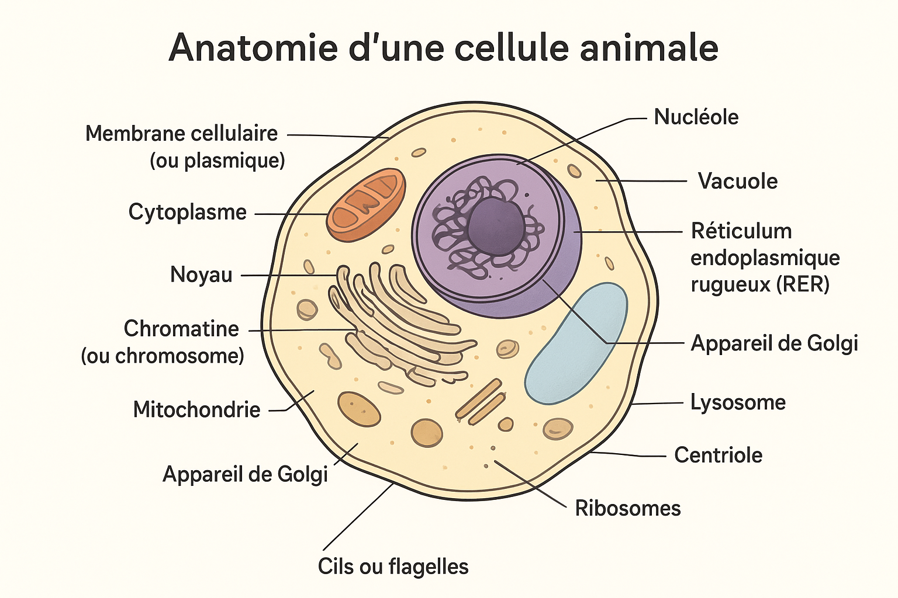

Les Cellules Animales
Par Ruilin Li
Une Diagrame Entiere d'un Cellule Animale (Eucaryote)

Les Parties des Cellules Animaux (Eucaryote) :
La Membrane Cellulaire/Plasmique
Les Cils/Flagelles
Le Noyau
Le Nucleole
La Chromatine/Les Chromosones/L'ADN
La Membrane Nucleaire
Le Cytoplasme
Le Cytosol
La Mitochondrie
Le Lysosome
La Vacuole
Le Reticulum Endoplasmique Rugeux - RER
Le Reticulum Endoplasmique Lisse - REL
Le Ribosome
L'Appareil/Le Corps de Golgi
Les Centrioles
Les Analogies pour Chaque Partie du Cellule Animale (Eucaryote)
La Membrane Cellulaire/Plasmique est comme la coque extérieure du Roomba
{kind=link}
Les Cils/Flagelles est comme les roues ou brosses
{kind=link}
Le Noyau est comme l'ordinateur central/CPU
{kind=link}
Le Nucleole est comme le microprocesseur du CPU
{kind=link}
La Chromatine/Les Chromosones/L'ADN est comme les logiciels et programmes
{kind=link}
La Membrane Nucleaire est comme la protection du microprocesseur
{kind=link}
Le Cytoplasme est comme l'intérieur du Roomba
{kind=link}
Le Cytosol est comme l'air dans l'intérieur du Roomba
{kind=link}
La Mitochondrie est comme le batterie/système d’énergie
{kind=link}
Le Lysosome est comme la poubelle/sac de collecte de poussière
{kind=link}
La Vacuole est comme la compartiment de stockage
{kind=link}
Le Reticulum Endoplasmique Rugeux (RER) est comme le convoyeur avec petites imprimantes (ribosomes)
{kind=link}
Le Reticulum Endoplasmique Lisse (REL) est comme le convoyeur ou filtre interne
{kind=link}
Le Ribosome est comme les petites imprimantes ou assembleuses
{kind=link}
L'Appareil/Le Corps de Golgi est comme le station de tri
Les Centrioles est comme les systemes de navigations